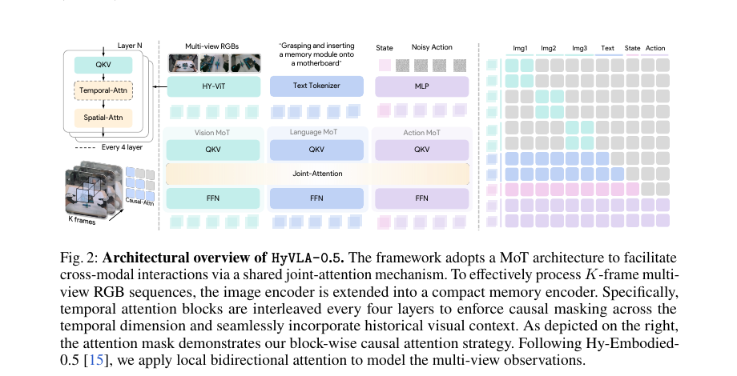
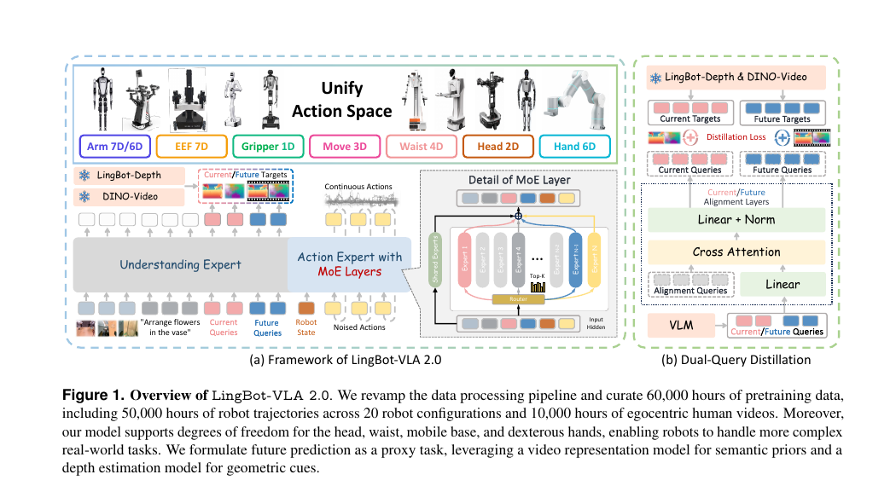

EMBODIED VLA RESEARCH / ARCHIVE 2026.08.26
从模型架构到数据闭环
Action Chunk、EEF 与仿真数据引擎：沿着共同的动作接口，理解通用策略、示范数据与交互学习。
本地“端到端混合架构具身模型调研”及“模型、数据与 Benchmark”报告的公开整理版；编排更新于 2026-11-04，模型与数据条目按原档案时间呈现。
01 / 模型谱系：从动作分块到通用策略
动作分块把多个控制步整合为一次预测，成为不同机器人模型共享的设计元素。ACT 通过条件生成与时序集成学习块状动作，Diffusion Policy 用扩散过程表达连续动作的多模态分布；VLA 进一步把视觉语言语义接入动作预测。
| 路线 | 代表工作 | 核心设计 | 研究重点 |
|---|---|---|---|
| 动作分块 | ACT | CVAE + 时序集成 | 多步预测与误差积累 |
| 扩散动作 | Diffusion Policy | 条件去噪与滚动控制 | 多模态接触运动 |
| 连续回归适配 | OpenVLA-OFT | 并行动作分块预测 | 吞吐、延迟与微调 |
| Flow 动作专家 | π0 / π0.5 | 视觉语言主干 + 连续动作生成 | 异质数据与开放世界任务 |
| 多本体建模 | GR00T N1 | 本体感知的 state / action 接口 | 共同表征与本体动作映射 |
| 轻量异步部署 | SmolVLA | 小型 VLM 与 flow expert | 计算预算与执行节奏 |
| 统一 token 路线 | G0.5 | 动作编码与自回归序列 | 推理、历史与动作对齐 |
| 端到端数据体系 | Hy-Embodied | MoT、时序视觉与动作专家 | EEF、数据处理与后训练 |

2026 年档案进一步收录 DM0.5、Xiaomi-Robotics-1、LingBot-VLA 2.0、EgoSteer 与 InternVLA-A1.5。它们分别从历史观察、多源对齐、未来表征、动作预见与视频辅助监督拓展通用策略。完整资源链接集中在看板的可搜索索引中。
02 / EEF 是几何接口，动作语义连接执行
末端执行器表示把操作轨迹组织为位置、姿态与夹爪状态，便于描述跨本体的几何任务。具体执行仍需结合机器人运动学、关节范围、夹爪单位和控制频率；本体适配层将公共几何表示转换为可执行命令。
在时序上，一条动作块需要同时明确预测长度、已执行前缀和剩余动作。模型推理与机器人执行异步进行时，下一次预测要与正在执行的运动衔接。将动作块长度、执行频率和延迟一起报告，能够直接说明策略的闭环行为。
| 数据字段 | 含义 | 共同记录 |
|---|---|---|
| EEF position / rotation | 末端几何状态或目标 | 参考坐标系、绝对／相对语义 |
| Joint / base | 关节与移动底盘控制 | 具名自由度、范围与频率 |
| Gripper / hand | 抓取与接触配置 | 连续／离散编码及单位 |
| Action chunk | 未来一段动作序列 | 长度、执行前缀、时间戳 |
| Observed transition | 指令后的真实状态变化 | 同步观察与任务结果 |
03 / 数据地图：真实多样性与结构化扩展
| 数据资源 | 主要形态 | 接入重点 |
|---|---|---|
| Open X-Embodiment | 多数据集、多本体真实轨迹 | 统一各来源的动作与状态语义 |
| DROID | 多场景、多操作者演示 | 相机、任务和操作者多样性 |
| BridgeData V2 | 真实桌面操作 | 任务指令与 EEF 原语 |
| UMI | 手持夹爪采集 | 相对轨迹、同步与部署接口 |
| Hy-UMI | 大规模手持采集与末端状态 | 从时序状态构造运动监督 |
| MimicGen | 少量示范的自动轨迹重组 | 对象相对动作与几何重放 |
| RoboTwin 2.0 | 双臂仿真任务与专家示范 | 本体映射、随机化与任务准入 |
真实数据提供视觉、物体和操作方式的多样性；仿真数据支持有组织地改变布局、相机、动力学和任务条件。二者通过统一交互记录衔接，可以把标准示范、困难状态与纠正轨迹纳入同一数据管线。
04 / 仿真引擎：有结构地生成变化
仿真扩展可以沿四个层次推进：先从已有专家生成可解的基础任务，再改变对象和布局；随后增加视觉、初态与动力学变化；最后从策略执行中采集困难状态，构造配对纠正或中间状态恢复轨迹。
同一任务的成功与失败分支保留共同初态和状态变化，有助于学习精确的动作调整。运动学、碰撞、目标谓词与轨迹回放则把生成结果连接到实际环境。按任务、布局和来源划分样本，使支持经验、训练目标与评测实例各有清楚角色。

05 / 将数据闭环接到交互记忆
一条交互记录可以服务于两个时间尺度：即时检索为当前决策提供上下文，后续训练则把多条经验融入参数。研究路线将写入条件、检索规则、参数更新与能力保持分别定义，使新增经验逐步形成可复用的行为知识。
KnowinMem 当前的检索式适配与历史条件纠错从这条路线出发。RoboTwin 的 27,500 条演示已完成分组，173 条配对支持用于三模型匹配训练；双臂训练纪要连接数据构造与接续评测。公开看板以实验、样例与技术报告保持各阶段的连贯呈现。